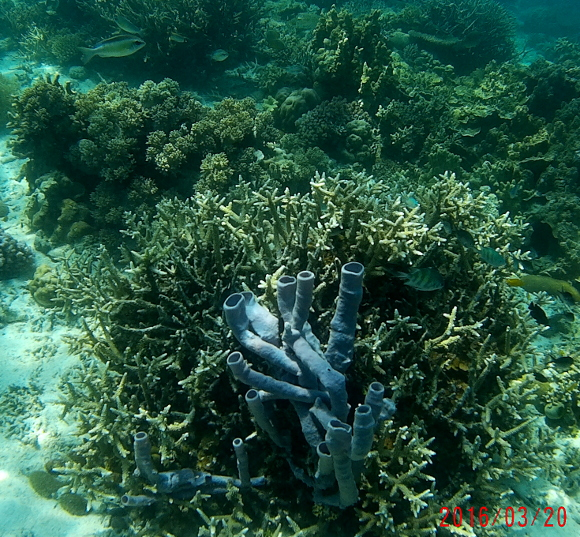
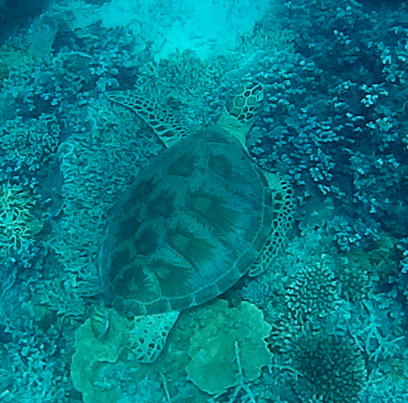
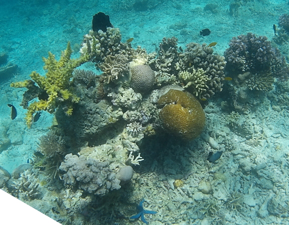
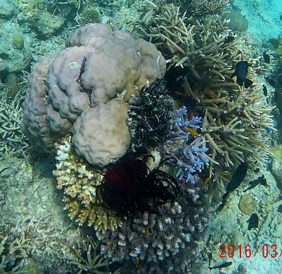
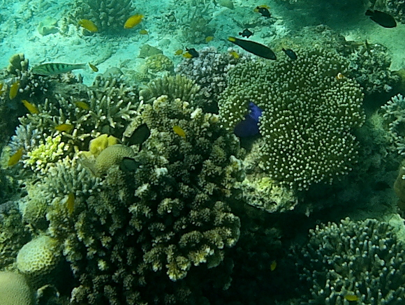
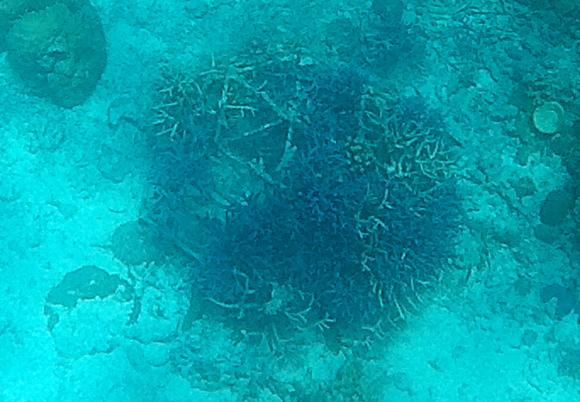
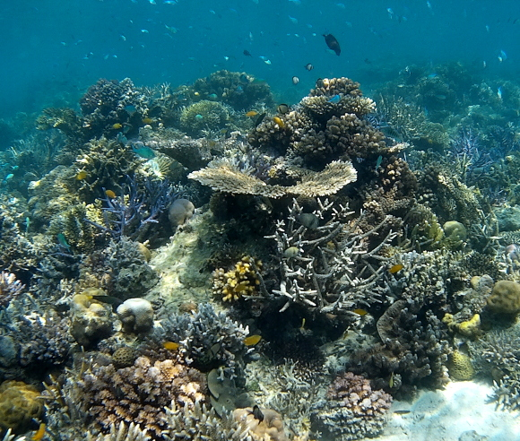
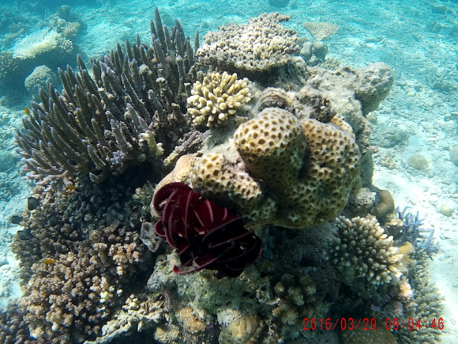

-------------------------------------------
Decided not to go snorkeling the third day in Semporna as it was re-visiting Sibuan. The forth day I passed because the dive spots did not seem interesting. But that afternoon Scuba Junkie called me and asked me to join the boat to Mantabuan the following day. YES was my reply, as it is not often boats go there, and sounded interesting being close to rather deep water. How would you rate the coral in the photos on this page?
-------------------------------------------
| First time I've seen these 'blue tubes'. Are they related to Sponges? So much to learn underwater! |  |
| Second of three turtles spotted today. He was also sitting motionless on the bottom, about 20 feet down. So I took some pics at the top, then dove down to get a better shot. That disturbed him, so he got up and headed to deeper water. |  |
| A dozen varieties of coral -- A good reason to snorkel! |  |
| A coral bouquet. The black and white coral in center of photo, and black fern-like soft coral below it are rather striking underwater. I don't recall seeing them before. |  |
| As the tops of this soft coral swayed in the currents, the stems shone a brilliant iridescent blue. |  |
| In some areas you can make out hexagonal shapes on the bottom. These are structures placed in the water, possibly five years ago, to encourage the re-growth of corals. The pic to the right was selected to show some of the original structure. Water depth 20 - 25 feet. |  |
| Running out of words to describe the beauty of it all. |  |
| Another wonderfully diverse reef with turtles, several new corals, and no damage. |  |
Anyone interested in a snorkeling trip? Babu Bill
Question? Contact me at the Juno.com address Dancer2SEAsia.
Have a nice day!

Special Topics:
| |||||